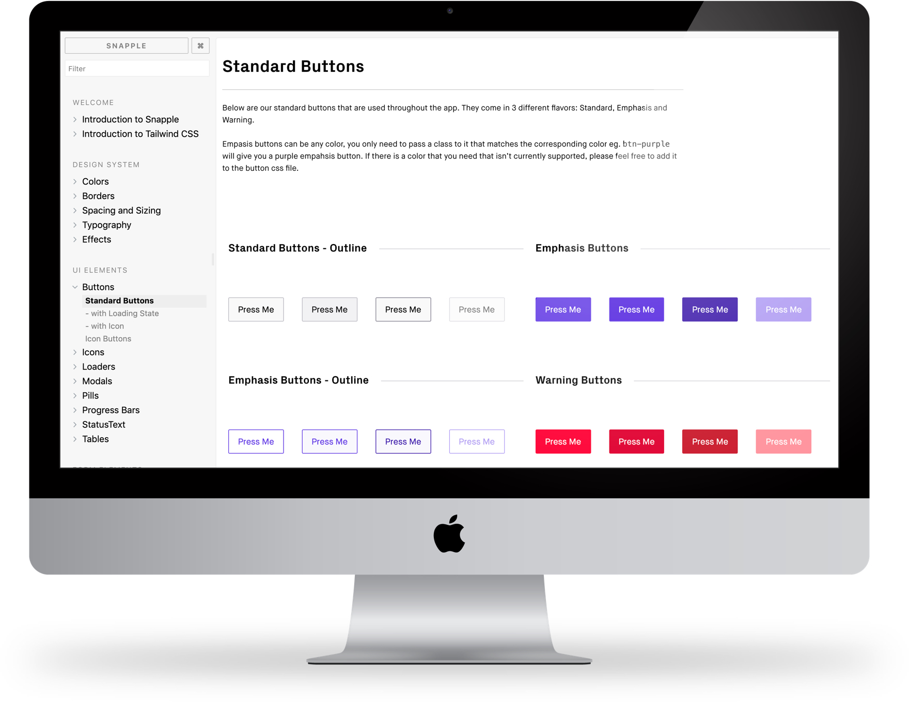

Introduction
As companies begin to expand and grow, a whole new set of challenges present themselves. I began at Format when the company had roughly 15 employees - we moved quickly and were masters of our product. As our team began to grow and we began to develop our product even further, a common question started presenting itself when designing or building new features:
“Anyone know if we have a thing that does a thing that looks like this thing and acts like this thing over here?”
Often times, the answer was yes. Even more often than that, however, the answer was “I don’t know.” In addition, being able to find “the thing” within the app became increasingly more difficult.
Moving into my new role as UX developer, I saw this as a great opportunity to establish a style guide and component directory that could be used by both design and development to help alleviate the issue.
Balancing Act
I began the process by talking with both the design and development teams to truly uncover their needs. It became clear that each team had very different and very specific priorities. The design team required the following: a single source of truth, visibility of all states, and an elegant, beautiful interface. The development team required the following: code snippets, compatibility with React, and the desire for openness and collaboration. Working to balance the needs of the design team, as well as the development team, created an interesting set of constraints to work within.
Design Requirements
Single Source of Truth
Components are exactly how they appear in the app. Change it once, change it everywhere.
Visibility of All States
Elements must have all states visible and in context to each other.
Elegant and Beautiful
Interface should be visually appealing and easy to use.
Development Requirements
Code Snippets
Components must have code snippets that allow for simple integration.
Compatible with React
Must work with our existing Javascript framework.
Open and Collaborative
Anyone should be able to add, edit or document components.
Given all the information, I felt confident I would be able to provide a solution that satisfied both team’s needs. The only issue that could make this challenging would be time and resources. Our team was still relatively small, and dedicating an entire resource to just building out a style guide and component directory was a hard sell. I needed to figure out a way that could meet the needs of everyone, including the business requirements.
It became clear that a fully custom solution would be off the table - this was pretty disheartening. As much as there are really great frameworks out there, but I was really excited to build something from the ground up that could really meet the needs of both teams and elevate our technical prowess.
Moving forward, I began to look at different frameworks that could work within our existing code base. Our development team had previous experience with StorybookJS, and it seemed to fit with their remaining requirements. Fortunately, most of design’s requirements would also be met with using this framework, however StorybookJS does leave a lot to be desired in terms of design. I decided that our MVP would be a functional implementation of StorybookJS that would allow components to be added and documented.
Disorganized Chaos
Once our MVP had been implemented, I began prioritizing which items should be moved into our style guide first. I spoke with many members of the design team, including the design director, so find out exactly what they needed. The team agreed that buttons and form elements would be the lowest hanging fruit we could grab.
As the style guide began to fill out, more and more contributors were involved and the development team started using the style guide as a sandbox for developing new components, which made the organization very chaotic, and made it very difficult for the design team to use it effectively.
It became very clear that there needed to be much more established guidelines and architecture added for the styleguide to be a true success.
To gain an idea of organization, I broke out components into types and categories and used simple card sorting to establish a clear architecture of all elements. Through this exercise, well defined categories began to emerge. The categories were UI Elements, Form Elements, and Notification Elements.
Component Categories
UI Elements
Buttons, pills, loaders, progress bars, and modals.
Form Elements
Text inputs, select boxes, and checkboxes.
Notification Elements
Alert bars, toasts, and callouts
With clear organization laid out, I also needed to make sure that the development team could still use the platform to build out components, so in addition to elemental sections, I created a dedicated sandbox area. This would allow them to not only build out rapid prototypes, but also create fully interactive components before integrating them into the app.
As Snapple became a widely adopted tool, we began to see many efficiencies in our processes. Development time had decreased and it allowed the team to effectively build, test, and deploy fully interactive components separate from our app. For the design team, they were able to get a very quick and detailed snapshot of which components existed in our app, all their variations and how and when to use them.
Next Steps
As it stands, the current layout and design for Snapple is incredibly utilitarian - it gets the job done. Moving forward, the design would be revamped and cleaned up with much more personality and branding injected.
Working with both teams and managing both expectations was an incredible experience to have. It was completely rewarding to design and build a tool that allowed our team to become more efficient and work collaboratively on an on-going basis.
Key Project Learnings
Managing Trade-Offs Can Be Difficult, but sometimes necessary.
Balancing the needs of all stakeholders is an art form.
Building Internal Tools can have massive gains to productivity.